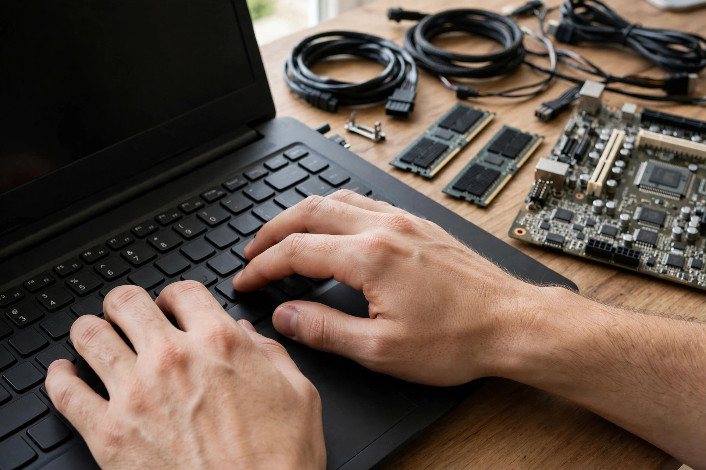

Ask any PPSC topper about the most underrated marks in the one paper exam, and many will point to the same quiet corner of the paper: Computer Science MCQs. Even if you applied for a completely non-technical post, 5 to 10 questions from computer fundamentals slip into the General Ability section. And if you applied for an IT-related post, computer science becomes the bulk of your paper.
Here is the best part: this is one of the most predictable sections in the entire PPSC syllabus. Computers do not change their definitions between papers. A question asked in 2021 can — and often does — walk back into the hall in 2026 with barely a word changed. That makes Computer Science MCQs the closest thing to guaranteed marks in the exam, provided you know exactly which topics keep repeating.
This guide maps the most repeated Computer Science MCQ topics in PPSC exams, shows how examiners disguise the same questions year after year, and hands you a realistic 14-day plan to lock this section down.
The 8 Most Repeated Computer Science MCQ Topics in PPSC
You do not need a computer science degree to score here. Year after year, PPSC draws its computer questions from the same eight wells. Master these and you will recognize most of the section the moment you see it.
1. Computer Hardware — the foundations
The single most repeated topic. Expect questions on the CPU (called the brain of the computer), RAM vs ROM differences, input devices (keyboard, mouse, scanner) vs output devices (monitor, printer, speaker), and storage devices (hard disk, SSD, USB, CD). Motherboard, ports, and the difference between hardware and software also appear constantly. These are simple one-line facts — pure free marks once memorized.
2. Software & Operating Systems
System software vs application software is a classic repeat. Know the examples: Windows, Linux, and macOS are operating systems; MS Word, Excel, and Photoshop are application software. Utility programs (antivirus, backup tools), language translators (compiler vs interpreter), and what an operating system actually does (manages hardware and software resources) are asked again and again.

3. MS Office — shortcuts and features
This is the section where non-technical candidates lose easy marks, and where prepared candidates gain them. PPSC loves MS Office: Ctrl+C, Ctrl+V, Ctrl+X, Ctrl+Z, Ctrl+S, Ctrl+P — the full shortcut family. Know which program does what (Word = documents, Excel = spreadsheets, PowerPoint = presentations), Excel basics like what a cell, row, column, and formula are, and the default file extensions (.docx, .xlsx, .pptx).
4. Networking & the Internet
LAN vs WAN vs MAN, what an IP address is, the difference between HTTP and HTTPS, what a URL is, email basics (inbox, CC, BCC, attachments), and the difference between the Internet and the World Wide Web. Modem, router, and browser vs search engine (Chrome is a browser, Google is a search engine) are among the most repeated single questions in this cluster.
5. Abbreviations & Full Forms
A guaranteed 2–4 questions in almost every paper. The greatest hits: CPU, RAM, ROM, HTTP, HTTPS, URL, HTML, PDF, USB, LAN, WAN, WWW, LCD, LED, ICT, GUI, OS, MB/GB/TB, and Wi-Fi. Learn them in small batches of ten — memorizing a list of 60 abbreviations in one sitting is how people forget them all by exam day.
6. Number Systems & Data Storage Units
Binary is the language of computers — know that it uses 0 and 1, that a bit is the smallest unit, and that 8 bits make a byte. The storage ladder (KB → MB → GB → TB) and which is larger than which is a favorite trick question. ASCII, decimal, and hexadecimal get occasional questions too, mostly at the definition level.
7. Databases, Programming & Computer Generations
What is a database? What is DBMS? (MySQL and MS Access are the common examples.) SQL is the language used to manage databases. For programming, just know the famous languages by name (C, C++, Java, Python) and that programming languages are translated by compilers and interpreters. Computer generations (first = vacuum tubes, current = AI/microprocessors) appear as timeline questions.
8. Computer Security Basics
Virus, worm, and trojan horse — know the difference. Antivirus software, firewall, phishing, hacking vs cracking at the definition level. Strong password practices and what spam is. These questions are easy and almost always definition-based, which means one reading pass is usually enough to secure them.
Want to test yourself on all of this right now? Our Computer Science MCQ practice section covers every one of these topics with thousands of free questions.
How Examiners Disguise the Same Questions
PPSC rarely invents a genuinely new computer question. Instead, it recycles the same facts with new clothes. Once you see the disguise patterns, old papers become answer keys for future ones.
- Rephrasing: "What is the brain of the computer?" becomes "Which component is known as the brain of the computer?" — same answer: CPU.
- Negative framing: "Which of the following is an input device?" becomes "Which of the following is NOT an output device?" — read the question twice.
- Option shuffling: the same four options, rearranged, with the correct answer sitting in a different slot.
- Applied framing: "Ctrl+S is used for…" becomes "You want to save your document quickly. Which shortcut will you press?" — same fact, story version.
This is why solving past papers is the single highest-value activity for this section: you are not just practicing, you are collecting the exact question bank the examiners keep drawing from. Our past papers strategy guide explains the method toppers use.
Your 14-Day Computer Science MCQ Plan
Two weeks, one focused hour a day, is enough to turn this section into a strength. Here is the skeleton:
- Days 1–3: Hardware + software. Learn the CPU, memory types, I/O devices, storage devices, OS vs application software. Attempt 100 MCQs on these two topics.
- Days 4–6: MS Office + shortcuts. Memorize the core shortcut family and the Word/Excel/PowerPoint basics. Practice on your own computer — muscle memory is faster than rote memory.
- Days 7–9: Networking + internet. LAN/WAN, IP addresses, HTTP vs HTTPS, email basics, browser vs search engine. 100+ MCQs.
- Days 10–11: Abbreviations + storage units. Two batches of 30 full forms, plus the bit→byte→KB→MB→GB→TB ladder and binary basics.
- Days 12–13: Databases + security. DBMS, SQL, programming language names, virus types, antivirus, firewall — all definition-level, one clean pass.
- Day 14: Mixed mock. Take a full timed computer science mock test under exam conditions, then revise only the questions you got wrong.
4 Mistakes That Waste This Easy Section
- Reading thick theory books cover to cover. PPSC computer questions are fact-based, not concept-based. A 500-page book for 10 one-line questions is a terrible trade.
- Memorizing abbreviations without context. "HTTP" memorized alone is forgettable; "HTTP — the thing at the start of every web address" is unforgettable.
- Ignoring MS Office because it seems "too basic". It seems basic to everyone — which is exactly why it separates prepared candidates from careless ones.
- Practicing without a timer. Knowing the answer in 3 minutes is the same as not knowing it in a 90-minute paper. Train at 54 seconds per question from day one.
- Computer Science MCQs appear in every PPSC one paper exam — 5–10 marks for general posts, far more for IT posts.
- The same 8 topics repeat: hardware, software & OS, MS Office, networking, abbreviations, storage units, databases, security.
- Examiners recycle facts with rephrased, negatively-framed, and story-version questions — past papers are your answer key.
- 14 days, one hour a day, in MCQ format with a timer — that is all this section needs.
Frequently Asked Questions
How many Computer Science MCQs come in the PPSC one paper exam?
For general posts, expect 5–10 computer questions inside the General Ability portion. For IT-related posts (like Assistant Director IT or Computer Operator), computer science forms the major post-related portion of the paper.
Do I need a computer science background to score in this section?
No. PPSC computer questions are fact-based and definition-level — hardware names, shortcuts, full forms, basic networking. A non-technical candidate with two weeks of focused MCQ practice routinely outscores CS graduates who did not prepare.
Which are the most repeated Computer Science MCQs in PPSC?
CPU as the brain of the computer, RAM vs ROM, input vs output devices, MS Office shortcuts (Ctrl+C/V/X/Z/S), HTTP vs HTTPS, LAN vs WAN, common abbreviations (CPU, RAM, URL, PDF, USB), and the bit-byte-KB-MB-GB ladder.
Where can I practice free Computer Science MCQs for PPSC?
Right here on MCQs Tayyari — the Computer Science practice section has thousands of free topic-wise MCQs, and the mock test simulator lets you attempt them under real exam timing with negative marking.
Turn these facts into marks — free, no login needed
195,477+ MCQs · timed exam simulator · negative marking · full 90-minute mocks
Practice Computer Science MCQs free · Try a full 100-MCQ practice set